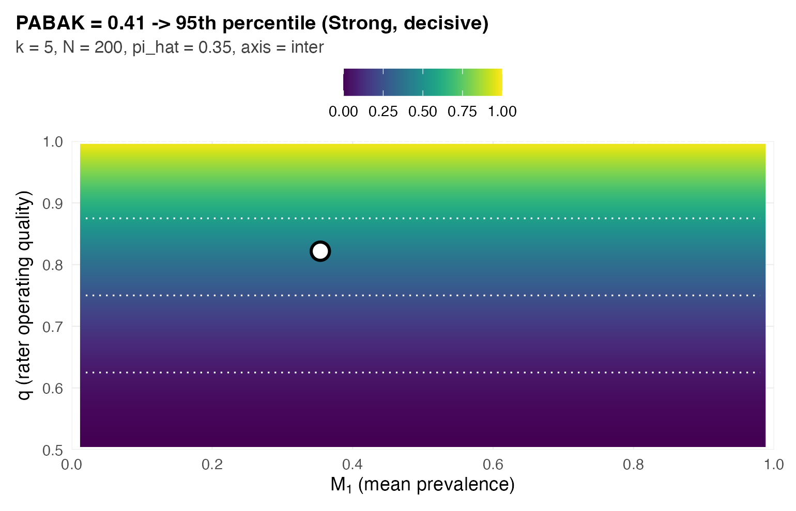
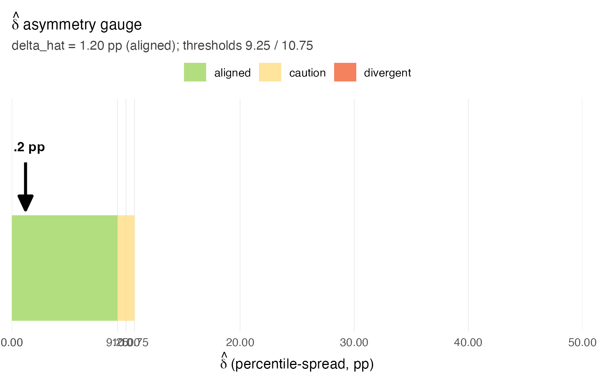
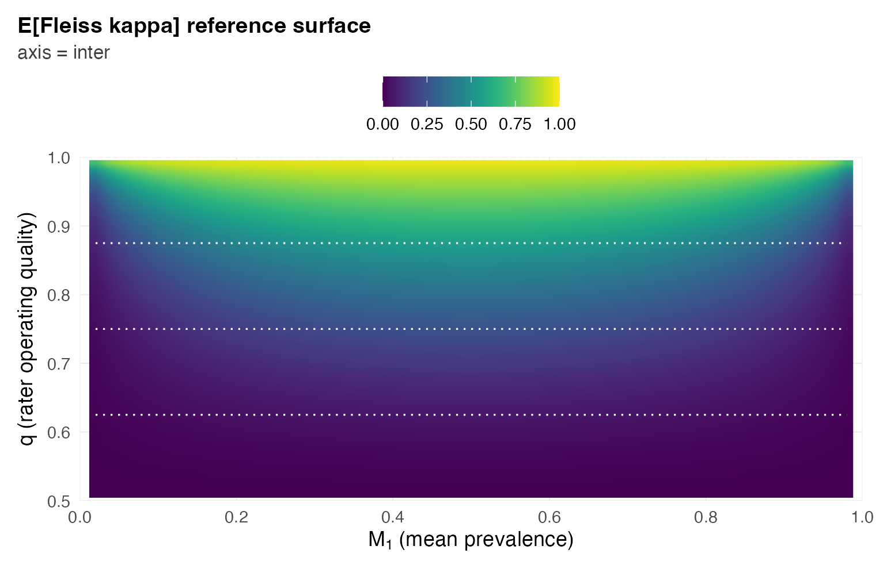
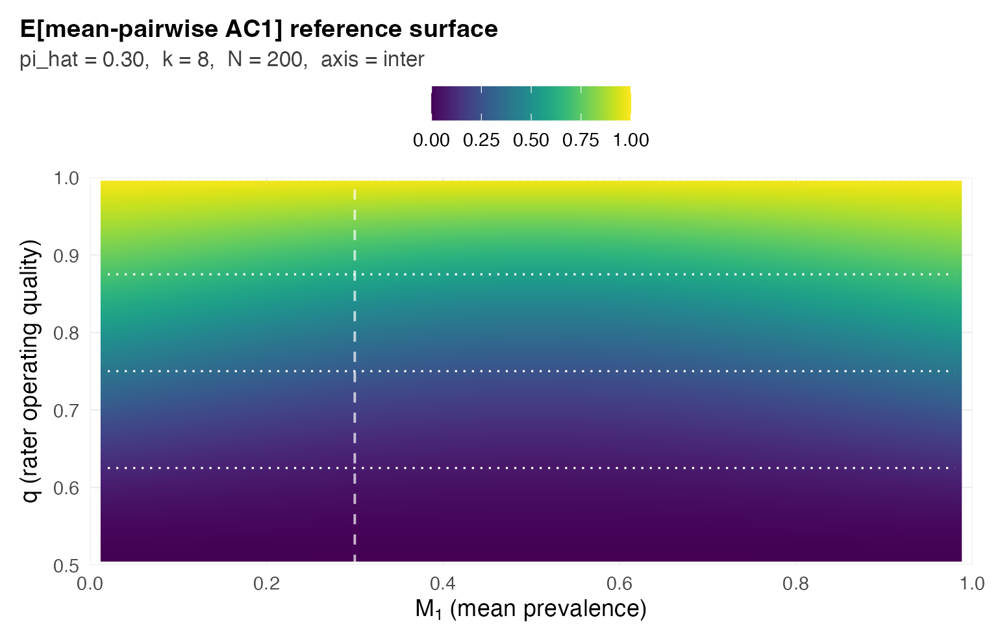
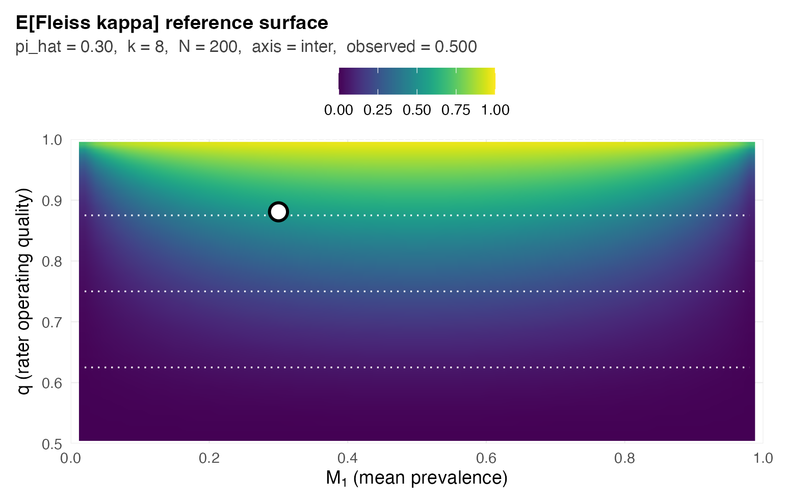

GRASS Report Card: a one-call workflow for binary rater reliability
Austin Semmel
Rachel Gidaro
2026-07-03
Source:vignettes/reporting-card.Rmd
reporting-card.RmdAbstract
Rater-reliability coefficients drift with prevalence, rater count, and sample size, so a fixed-cutoff label like “substantial agreement” can land on the same panel and mean different things. This package replaces fixed cutoffs with a context-conditioned Report Card, computed in one call from the rating matrix alone. The workflow returns four fields: the sample summary, the primary coefficient with its surface percentile, the cross-coefficient asymmetry diagnostic, and (when the panel disagrees with itself) a per-rater latent-class fit.
What’s new in 0.6.0
-
Krippendorff’s α removed from the Report Card and δ̂
(0.6.0): in the binary fully-crossed designs this package
targets, α coincides with Fleiss’ κ asymptotically (median absolute
difference 0.00024 across the 10,140-cell calibration grid), so its row
added no information and its small-sample deviation could tip borderline
δ̂ readings across a threshold on noise alone. δ̂ is now the percentile
spread over PABAK, mean AC1, and Fleiss’ κ; the bundled thresholds hold
for the 3-coefficient spread (sub-pp shift, within MC-SE).
obs_krippendorff_alpha()is exported for anyone needing the value, andposition_on_surface(metric = "krippendorff_a")still positions it on its closed-form reference. -
Legacy pre-0.2.0 API removed (0.6.0):
grass_format_report(),grass_methods(),grass_report_by(), and thegrass_resultmethods. SeeNEWS.md.
Full release history, including the 0.5.x sysdata corrections, is in
NEWS.md.
1. The headline call
The entire workflow is three lines: load the package, pass an
N x k binary rating matrix, print the result.
library(grassr)
set.seed(2026)
# Tiny demo: 5 raters, 200 subjects, modest agreement.
truth <- rbinom(200, 1, 0.30)
Y <- sapply(1:5, function(j) {
ifelse(truth == 1, rbinom(200, 1, 0.85), rbinom(200, 1, 0.15))
})
grass_report(ratings = Y)
#> GRASS Report Card
#>
#> sample = 5 raters, N = 200, pi_hat = 0.34
#> PABAK = 0.47 -> 27th percentile (decisive) <- primary
#> AC1 = 0.52 -> 26th percentile
#> Fleiss kappa = 0.41 -> 31st percentile
#> ICC = 0.53 -> 50th percentile [distribution-sensitive]
#> delta = 4.7 pp (aligned)
#> thresholds = (9.25, 10.75) [calibrated at this (k, N)]
#>
#> Notes:
#> - Fitted-ICC F_key picked via glmer: mu_hat=-1.039, tau2_hat=3.669 -> F_key tau2=4.0000, mu=-0.847.
#> - Fitted-ICC reference (GLMM-gap corrected) at F_key=LN_mu=-0.847_tau2=4.0000, k=5, N=200 (family=logit_normal, M1=0.374).
#>
#> See `summary(...)` for full panel and CI details.
#> See `plot(...)` for a surface-position visualization.Each block in the printed Report Card means something specific:
-
sampledescribes the study: rater countk, subject countN, and the observed positive ratepi_hat = mean(Y). -
The primary coefficient line
(e.g.
PABAK = 0.41 -> 95th pct (decisive)) shows the observed value, where it lands on the reference surface for this study’s(k, N, pi_hat), and the confidence qualifier (decisive / moderate / weak) reflecting the local envelope width. The percentile is the categorical score; no four-way labeled band sits between the percentile and the reader. -
deltais the cross-coefficient percentile spread in pp across the agreement family (PABAK, AC1, Fleiss kappa; ICC excluded by construction). The caution and divergent cuts are size-α calibrated per(k, N)(delta_thresholds_lookup); at the modal applied design(k = 5, N = 200)the pair is(9.25, 10.75)pp. Below the caution cut the panel is aligned and the primary coefficient is safe to cite; above the divergent cut the panel- aggregate is suppressed in favor of the pairwise PABAK matrix and per-rater pooled-reference Se/Sp.
2. A symmetric panel (the easy case)
Five raters with the same accuracy (Se = Sp = 0.85) on a moderate-prevalence binary task. The panel should land in the aligned tier: every coefficient agrees about where the panel sits, so a single number is enough.
set.seed(29)
N <- 200; k <- 5
truth <- rbinom(N, 1, 0.30)
Y_sym <- sapply(1:k, function(j) {
ifelse(truth == 1, rbinom(N, 1, 0.85), rbinom(N, 1, 0.15))
})
card_sym <- grass_report(ratings = Y_sym)
card_sym
#> GRASS Report Card
#>
#> sample = 5 raters, N = 200, pi_hat = 0.35
#> PABAK = 0.41 -> 95th percentile (decisive) <- primary
#> AC1 = 0.46 -> 94th percentile
#> Fleiss kappa = 0.36 -> 95th percentile
#> ICC = 0.46 -> 50th percentile [distribution-sensitive]
#> delta = 1.2 pp (aligned)
#> thresholds = (9.25, 10.75) [calibrated at this (k, N)]
#>
#> Notes:
#> - Fitted-ICC F_key picked via glmer: mu_hat=-0.877, tau2_hat=2.801 -> F_key tau2=4.0000, mu=-0.847.
#> - Fitted-ICC reference (GLMM-gap corrected) at F_key=LN_mu=-0.847_tau2=4.0000, k=5, N=200 (family=logit_normal, M1=0.374).
#>
#> See `summary(...)` for full panel and CI details.
#> See `plot(...)` for a surface-position visualization.Note three things:
- The
flagisaligned(delta = 1.2 pp, well below the 9.25-pp caution threshold). One coefficient is safe to cite. - Only the primary coefficient prints (PABAK, picked automatically by
the
(k, pi_hat)rule from Table 2 of the paper). The full panel of four coefficients is still computed and stored on the object; it is just not the headline. - The qualifier (
decisive) is calibrated, not inherited from a fixed-band convention: it is the bootstrap probability that the modal surface region survives perturbation of(q_hat, pi_hat), mapped to decisive / moderate / weak at 0.90 / 0.60. A four-band label is computed and stored on the object for programmatic use; the printed headline carries the percentile and the qualifier only.
3. A divergent panel
Now the paper’s divergent worked example (the op_strong
profile): five raters with alternating per-rater bias direction
at balanced prevalence. Three raters lean toward over-calling (Se =
0.95, Sp = 0.75); two lean toward under-calling (Se = 0.75, Sp = 0.95).
The asymmetry is severe per rater but cancels in the panel-aggregate
marginals, so each agreement coefficient returns roughly the same
observed value, yet their inversions onto the (symmetric-DGP) reference
surfaces split across percentiles. This is the configuration where the
headline grass_report flag flips from a single coherent
reading to a per-rater diagnostic.
set.seed(6)
N <- 1000; k <- 5
# Alternating per-rater Se/Sp asymmetry: R1, R3, R5 favor sensitivity;
# R2, R4 favor specificity. Subject-level positive probabilities are
# logit-normal around balanced prevalence (the paper's divergent DGP).
Se <- c(0.95, 0.75, 0.95, 0.75, 0.95)
Sp <- c(0.75, 0.95, 0.75, 0.95, 0.75)
p_i <- plogis(rnorm(N, qlogis(0.50), sqrt(0.25)))
truth <- rbinom(N, 1L, p_i)
Y_div <- matrix(0L, N, k)
for (j in seq_len(k)) {
Y_div[, j] <- rbinom(N, 1L, ifelse(truth == 1L, Se[j], 1 - Sp[j]))
}
card_div <- grass_report(ratings = Y_div, bootstrap_B = 200)
card_div
#> GRASS Report Card
#>
#> sample = 5 raters, N = 1000, pi_hat = 0.50
#> PABAK = 0.49 -> 40th percentile <- primary
#> AC1 = 0.49 -> 58th percentile
#> Fleiss kappa = 0.49 -> 41st percentile
#> ICC = 0.62 -> 50th percentile [distribution-sensitive]
#> panel-agg. = suppressed (divergent)
#> delta = 18 pp (divergent)
#> thresholds = (8.50, 9.75) [calibrated at nearest grid cell (snapped)]
#>
#> pairwise PABAK / surface percentile (lower / upper):
#> R1 R2 R3 R4 R5
#> R1 -- 25% 79% 43% 98%
#> R2 0.47 -- 97% 90% 17%
#> R3 0.51 0.41 -- 98% 96%
#> R4 0.48 0.52 0.42 -- 62%
#> R5 0.55 0.46 0.54 0.50 --
#>
#> per-rater vs panel-majority of OTHER raters (pooled-reference):
#> R1 Se_tilde = 0.94 Sp_tilde = 0.77 (n_pos = 434, n_neg = 471, excl = 95)
#> R2 Se_tilde = 0.71 Sp_tilde = 0.95 (n_pos = 466, n_neg = 439, excl = 95)
#> R3 Se_tilde = 0.95 Sp_tilde = 0.71 (n_pos = 433, n_neg = 485, excl = 82)
#> R4 Se_tilde = 0.74 Sp_tilde = 0.95 (n_pos = 468, n_neg = 441, excl = 91)
#> R5 Se_tilde = 0.96 Sp_tilde = 0.78 (n_pos = 428, n_neg = 476, excl = 96)
#>
#> per-rater (latent-class fit; alongside pairwise):
#> R1 Se = 0.95 (0.23, 0.97) Sp = 0.78 (0.06, 0.82)
#> R2 Se = 0.73 (0.05, 0.77) Sp = 0.95 (0.29, 0.97)
#> R3 Se = 0.96 (0.29, 0.97) Sp = 0.72 (0.05, 0.76)
#> R4 Se = 0.75 (0.05, 0.79) Sp = 0.95 (0.26, 0.97)
#> R5 Se = 0.96 (0.22, 0.98) Sp = 0.78 (0.04, 0.82)
#>
#> Notes:
#> - (k = 5, N = 1000) has no fully-calibrated threshold pair on the grid (or is off-grid); using nearest fully-calibrated cell (k = 5, N = 500).
#> - Fitted-ICC F_key picked via glmer: mu_hat=0.005, tau2_hat=5.278 -> F_key tau2=4.0000, mu=0.000.
#> - Fitted-ICC reference (GLMM-gap corrected) at F_key=LN_mu=+0.000_tau2=4.0000, k=5, N=1000 (family=logit_normal, M1=0.500).
#>
#> See `summary(...)` for full panel and CI details.
#> See `plot(...)` for a surface-position visualization.The flag is divergent: the cross-coefficient percentile
spread clears the divergent threshold printed on the card (9.75 pp,
snapped from the nearest calibrated cell) even though the three
agreement coefficients (PABAK, AC1, Fleiss kappa) all sit near the same
observed value. Three things change in the printed output:
- The full panel of percentiles prints, not just the primary, so the reader can see that AC1 separates from the kappa-family coefficients.
- The
bandissuppressed. Picking a single number from a panel whose coefficients disagree on the surface position would hide the asymmetry. - The per-rater table appears. A latent-class fit (Dawid-Skene EM at k >= 3, Hui-Walter bounds at k = 2) recovers each rater’s sensitivity and specificity with bootstrap confidence intervals. The recovered estimates pin the panel’s structure: R1, R3, R5 land near (Se, Sp) = (0.95, 0.75), R2, R4 near (0.75, 0.95). The bootstrap CIs are wide because the latent-class likelihood becomes ridge-flat near balanced prevalence and the bootstrap resamples both the correct mode and its label-switched counterpart; the point estimates pin the local mode, but without external orientation the practitioner cannot assert from the rating matrix alone which raters are over- versus under-callers.
Pairwise reliability under the divergent flag
When the panel is divergent the framework’s recommended primary
deliverable is pairwise_agreement(): a k x k
matrix of pairwise PABAK values, each placed on the k = 2
reference surface at the pair’s observed marginal, plus per-rater
behavior against the panel-majority of the other
k - 1 raters as a proxy reference. The pairwise matrix
exposes the panel’s structure directly, and the pooled-reference
per-rater table avoids the latent-class identifiability problem
(label-switching is moot because the “reference” is the observable panel
majority, not a latent class).
pw <- pairwise_agreement(Y_div)
pw
#> GRASS Pairwise Reliability
#>
#> sample = 5 raters, N = 1000, pi_hat = 0.50, tau2_hat = 0.122, axis = inter
#>
#> Pairwise PABAK (lower triangle = PABAK_ij; upper triangle = surface percentile):
#>
#> R1 R2 R3 R4 R5
#> R1 -- 25% 79% 43% 98%
#> R2 0.47 -- 97% 90% 17%
#> R3 0.51 0.41 -- 98% 96%
#> R4 0.48 0.52 0.42 -- 62%
#> R5 0.55 0.46 0.54 0.50 --
#>
#> Per-rater behavior against pooled panel-majority:
#>
#> rater Se_tilde Sp_tilde n_pos n_neg n_excl
#> R1 0.94 0.77 434 471 95
#> R2 0.71 0.95 466 439 95
#> R3 0.95 0.71 433 485 82
#> R4 0.74 0.95 468 441 91
#> R5 0.96 0.78 428 476 96
#> (Se_tilde, Sp_tilde are calls vs panel-majority of OTHER raters,
#> not against external truth. n_excl: subjects with tied majority,
#> excluded from the per-rater pool.)Read the per-rater table: with R1, R3, R5 favoring sensitivity and
R2, R4 favoring specificity, the pooled-reference estimates pin each
rater’s bias direction without ambiguity. R1’s Se_tilde is
high (calls true positives at panel-majority rate) while
Sp_tilde is lower (calls panel-majority negatives less
reliably): the over-caller signature. R2 shows the mirror: low
Se_tilde, high Sp_tilde. The latent-class
fit’s wide bootstrap CIs in the paper’s divergent example had to live
with the label-switched mode; the pooled-reference per-rater table
sidesteps that ambiguity.
The pairwise PABAK matrix lower triangle shows the actual pairwise
agreements; the upper triangle shows surface percentiles at each pair’s
observed marginal. Note that the same PABAK value can land at different
surface percentiles across pairs because each pair sees a different
pi_hat_ij; the divergent flag is exposing exactly this
prevalence-by-pair structure that a panel-aggregate summary would have
averaged away.
4. Layered access
Every field beneath the printed Report Card is available on demand.
summary(card_sym)
#> GRASS Report Card -- summary
#>
#> sample : k = 5 raters, N = 200, pi_hat = 0.354, axis = inter
#> tau2_hat : 0.083
#>
#> primary coefficient
#> name : pabak
#> observed : 0.414
#> percentile : 95.42 pp
#> band : Strong
#> qualifier : decisive
#>
#> delta (cross-coefficient asymmetry)
#> delta_hat : 1.20 pp
#> flag : aligned
#> thresholds : caution = 9.25, divergent = 10.75
#>
#> panel (full table)
#> pabak observed = 0.414 pct = 95.42 pp band = Strong qualifier = decisive
#> mean_ac1 observed = 0.460 pct = 94.22 pp band = Strong qualifier = decisive
#> fleiss_kappa observed = 0.359 pct = 94.67 pp band = Strong qualifier = decisive
#> icc observed = 0.464 pct = 50.00 pp band = Strong qualifier = decisive
#>
#> notes
#> - Fitted-ICC F_key picked via glmer: mu_hat=-0.877, tau2_hat=2.801 -> F_key tau2=4.0000, mu=-0.847.
#> - Fitted-ICC reference (GLMM-gap corrected) at F_key=LN_mu=-0.847_tau2=4.0000, k=5, N=200 (family=logit_normal, M1=0.374).
#>
#> grass version : 0.6.1
#> timestamp : 2026-07-03 13:30:16summary() is the audit view: full panel of
coefficients with percentiles and bands, all caveats from the surface
lookup, the GRASS version, the timestamp. Use it when you want to see
what the headline hides.
head(as.data.frame(card_sym), 5)
#> coefficient observed_value surface_percentile band qualifier
#> 1 pabak 0.4140000 95.41694 Strong decisive
#> 2 mean_ac1 0.4601604 94.21535 Strong decisive
#> 3 fleiss_kappa 0.3593780 94.66860 Strong decisive
#> 4 icc 0.4641657 50.00000 Strong decisive
#> band_probability_modal q_hat se_q_hat clamped reference_used
#> 1 1 0.8217138 0.013797700 FALSE closed-form
#> 2 1 0.8217650 0.013796793 FALSE closed-form
#> 3 1 0.8217138 0.013797700 FALSE closed-form
#> 4 1 0.8075234 0.005569156 FALSE fitted-icc
#> in_delta_hat is_primary
#> 1 TRUE TRUE
#> 2 TRUE FALSE
#> 3 TRUE FALSE
#> 4 FALSE FALSEas.data.frame() is the tidy view: one row per
coefficient with observed_value,
surface_percentile, band,
qualifier, and is_primary. Use it when you
want to bind many studies’ Report Cards into one table for a
meta-analysis or to feed the panel into another analysis pipeline.
plot(card_sym) # default: surface with observation pinned
#> Warning: The following aesthetics were dropped during statistical transformation: fill.
#> ℹ This can happen when ggplot fails to infer the correct grouping structure in
#> the data.
#> ℹ Did you forget to specify a `group` aesthetic or to convert a numerical
#> variable into a factor?
#> Warning: Removed 120 rows containing missing values or values outside the scale range
#> (`geom_raster()`).
plot(card_sym, type = "thermometer") # delta_hat thermometer
#> Warning: Removed 1 row containing missing values or values outside the scale range
#> (`geom_rect()`).
The default plot() view is a heatmap of the expected
primary coefficient over (M_1, q) at the study’s
(k, N), with a single point pinned at the observed
coordinates. The thermometer view isolates
delta_hat against the caution and divergent thresholds;
useful when the question is “is the panel stable enough to cite a
single number?”. Additional views (type = "panel" for
the cross-coefficient spread, type = "intervals" for
forest-style CIs, type = "per_rater" for the
divergent-branch per-rater forest, type = "diagnostic" for
a combined patchwork) are documented in
?plot.grass_card.
5. Granular building blocks
For users who want lower-level control, three of the internals
grass_report() calls are exported:
position_on_surface(ratings = Y_sym, metric = "pabak")
#> grass surface-position report (Target-2 reporting convention)
#> metric : pabak
#> observed value : 0.414
#> design (pi_hat,k,N) : (0.354, 5, 200)
#> q_hat (scaffold) : 0.822 +/- 0.014
#> surface percentile : 0.954
#> band probabilities :
#> Poor 0.000
#> Moderate 0.000
#> Strong 1.000 <- modal
#> Excellent 0.000
#> label : Strong (decisive)
#> sampling method : empiricalposition_on_surface() does the surface lookup for a
single coefficient and returns the percentile, band, and
band-probability vector.
check_asymmetry(ratings = Y_sym)
#> GRASS panel asymmetry diagnostic
#>
#> delta_hat = 1.2 pp
#> flag = aligned (< 9.2)
#>
#> panel:
#> coefficient observed percentile (pp) in delta_hat
#> pabak 0.41 95.4 yes
#> mean_ac1 0.46 94.2 yes
#> fleiss_kappa 0.36 94.7 yes
#> icc 0.46 50.0 no [distribution-sensitive]
#>
#> Surface caveats:
#> - Fitted-ICC F_key picked via glmer: mu_hat=-0.877, tau2_hat=2.801 -> F_key tau2=4.0000, mu=-0.847.
#> - Fitted-ICC reference (GLMM-gap corrected) at F_key=LN_mu=-0.847_tau2=4.0000, k=5, N=200 (family=logit_normal, M1=0.374).
#> - delta_hat is computed over the agreement family (PABAK, AC1, Fleiss, alpha). ICC is reported on the panel but does not enter delta_hat (v0.5.0 scope: ICC's reference surface depends on the full subject-prevalence distribution F and does not share the (q, pi_+) sufficient statistic the agreement family does).check_asymmetry() returns the cross-coefficient
percentile spread and the (aligned / caution / divergent) flag without
computing per-rater detail. Cheap when you want only the diagnostic.
latent_class_fit(ratings = Y_div, B = 200)
#> grass latent-class fit
#> method : dawid_skene_em
#> raters (k) : 5
#> bootstrap B : 200
#> converged : TRUE
#> iterations : 10
#> prevalence_hat: 0.475
#> log-likelihood: -2504.371
#> per-rater
#> R1 Se = 0.950 (0.201, 0.970) Sp = 0.783 (0.050, 0.817)
#> R2 Se = 0.729 (0.042, 0.770) Sp = 0.953 (0.259, 0.973)
#> R3 Se = 0.956 (0.262, 0.973) Sp = 0.718 (0.036, 0.764)
#> R4 Se = 0.750 (0.044, 0.784) Sp = 0.949 (0.259, 0.965)
#> R5 Se = 0.962 (0.206, 0.980) Sp = 0.781 (0.038, 0.812)latent_class_fit() produces the per-rater Se/Sp table
directly, with Dawid-Skene EM and a nonparametric bootstrap CI at k
>= 3.
6. Two-rater binary case (k = 2)
The headline call works at k = 2 with no signature change:
set.seed(42)
N <- 200
truth <- rbinom(N, 1, 0.30)
Y_k2 <- cbind(
ifelse(truth == 1, rbinom(N, 1, 0.85), rbinom(N, 1, 0.15)),
ifelse(truth == 1, rbinom(N, 1, 0.85), rbinom(N, 1, 0.15))
)
grass_report(ratings = Y_k2)
#> GRASS Report Card
#>
#> sample = 2 raters, N = 200, pi_hat = 0.39
#> PABAK = 0.50 -> 56th percentile (decisive) <- primary
#> AC1 = 0.52 -> 57th percentile
#> delta = 0.4 pp (aligned)
#> thresholds = (8.25, 9.75) [calibrated at nearest grid cell (snapped)]
#>
#> Notes:
#> - (k = 2, N = 200) has no fully-calibrated threshold pair on the grid (or is off-grid); using nearest fully-calibrated cell (k = 3, N = 200).
#>
#> See `summary(...)` for full panel and CI details.
#> See `plot(...)` for a surface-position visualization.When the panel goes divergent at k = 2, per-rater Se and Sp are not point-identified from the rating matrix alone (there is one fewer constraint than parameter). The latent-class fit returns Hui-Walter bounds rather than point estimates:
latent_class_fit(ratings = Y_k2, B = 200)
#> grass latent-class fit
#> method : hui_walter
#> raters (k) : 2
#> bootstrap B : 200
#> per-rater
#> R1 Se in [0.395, 1.000] Sp in [0.605, 1.000] (bounds)
#> R2 Se in [0.385, 1.000] Sp in [0.615, 1.000] (bounds)
#>
#> Note: at k = 2, per-rater Se/Sp are not point-identified
#> without external information. The intervals are
#> Hui-Walter (1980) inequality bounds, not point
#> estimates with sampling uncertainty.The bounds carry the same meaning as the k >= 3 point estimates: an honest representation of what the data say about each rater. At k = 2 that is a range; at k >= 3 it is a point with uncertainty.
7. Surface-envelope clamp (an edge case worth knowing about)
delta_hat measures cross-coefficient surface-percentile
spread. If one of the panel’s coefficients reports an observed value
that falls outside the achievable range of its reference surface at the
study’s design (pi_hat, k, N), the inversion to
q_hat clamps to the surface boundary and the percentile
lands at exactly 0 or 100. Since v0.2.2, check_asymmetry()
and grass_report() exclude such clamped
coefficients from delta_hat whenever at least two unclamped
coefficients remain — otherwise a single clamped coefficient could
inflate the spread by 100 pp and fire a false divergent
flag.
The most common trigger is ICC at N > 200. The
bundled fitted-ICC reference is calibrated at N in
{50, 200}; beyond that, the function falls back to the
oracle ICC reference (closed-form, no GLMM-gap correction), which
over-predicts the practitioner’s glmer-fit ICC and clamps the percentile
to 0:
# A panel where ICC clamps but the three agreement coefficients align.
set.seed(5)
N <- 1000L; k <- 5L
mu_logit <- qlogis(0.08)
p_i <- plogis(rnorm(N, mu_logit, sqrt(0.25)))
truth <- rbinom(N, 1, p_i)
Y_clamp <- matrix(0L, N, k)
for (j in seq_len(k)) {
Y_clamp[, j] <- rbinom(N, 1, ifelse(truth == 1, 0.85, 0.15))
}
card_clamp <- grass_report(Y_clamp, bootstrap_B = 50)
card_clamp
#> GRASS Report Card
#>
#> sample = 5 raters, N = 1000, pi_hat = 0.21
#> PABAK = 0.49 -> 46th percentile (decisive) <- primary
#> AC1 = 0.62 -> 46th percentile
#> Fleiss kappa = 0.23 -> 47th percentile
#> ICC = 0.33 -> 50th percentile [distribution-sensitive]
#> delta = 1 pp (aligned)
#> thresholds = (8.50, 9.75) [calibrated at nearest grid cell (snapped)]
#>
#> Notes:
#> - (k = 5, N = 1000) has no fully-calibrated threshold pair on the grid (or is off-grid); using nearest fully-calibrated cell (k = 5, N = 500).
#> - Fitted-ICC F_key picked via glmer: mu_hat=-1.716, tau2_hat=1.633 -> F_key tau2=1.0000, mu=-1.386.
#> - Fitted-ICC reference (GLMM-gap corrected) at F_key=LN_mu=-1.386_tau2=1.0000, k=5, N=1000 (family=logit_normal, M1=0.239).
#>
#> See `summary(...)` for full panel and CI details.
#> See `plot(...)` for a surface-position visualization.The printed Report Card surfaces the clamp in two places: the
Notes section names which coefficient was excluded and why,
and under the divergent flag the panel display marks each
clamped coefficient row with
[clamped - excluded from delta]. The panel
data.frame on the returned object also carries a clamped
logical column for programmatic inspection:
card_clamp$panel[, c("coefficient", "surface_percentile",
"band", "clamped")]
#> coefficient surface_percentile band clamped
#> 1 pabak 46.27444 Strong FALSE
#> 2 mean_ac1 45.50669 Strong FALSE
#> 3 fleiss_kappa 46.52487 Strong FALSE
#> 4 icc 50.00000 Strong FALSEThe trade-off: a coefficient with no calibrated reference at the
user’s design contributes nothing to the diagnostic. The benefit: when
delta_hat does fire divergent, it reflects
genuine cross-coefficient surface-percentile disagreement rather than an
envelope artifact. If the clamp is cosmetic (the three agreement
coefficients align cleanly without ICC), the Report Card’s verdict is
the right one. If clamping coincides with a real divergent panel (rare
but possible), the Notes line and the clamped
column let the practitioner audit which coefficients contributed to the
diagnostic.
8. Prospective design: plot_surface()
The Report Card workflow assumes you already have a rating matrix.
For study design — “what would my reference surface look like at
k = 8, N = 200, pi_hat = 0.30 before I collect data?” — use
the new plot_surface() entry point.
The bare call shows the closed-form expected value of a coefficient
across the entire surface (mean prevalence M_1 × rater
operating quality q). Dotted contours overlay equal-spaced
reference levels on the q-axis (computational scaffolding
for the qualifier; not displayed on the headline Report Card), so the
reader can see which combinations of prevalence and rater quality land
where:
plot_surface("fleiss_kappa")
#> Warning: The following aesthetics were dropped during statistical transformation: fill.
#> ℹ This can happen when ggplot fails to infer the correct grouping structure in
#> the data.
#> ℹ Did you forget to specify a `group` aesthetic or to convert a numerical
#> variable into a factor?
#> Warning: Removed 120 rows containing missing values or values outside the scale range
#> (`geom_raster()`).
Adding a design context overlays a dashed reference at the planned marginal:
plot_surface("mean_ac1",
pi_hat = 0.30,
k = 8,
N = 200)
#> Warning: The following aesthetics were dropped during statistical transformation: fill.
#> ℹ This can happen when ggplot fails to infer the correct grouping structure in
#> the data.
#> ℹ Did you forget to specify a `group` aesthetic or to convert a numerical
#> variable into a factor?
#> Warning: Removed 120 rows containing missing values or values outside the scale range
#> (`geom_raster()`).
Adding a hypothetical observed value pins a marker at
(pi_hat, hat q), where hat q is recovered by
closed-form inversion against the reference curve at
pi_hat. This answers “if I observe Fleiss kappa = 0.50 in a
panel at this design, where on the surface would I sit?”:
plot_surface("fleiss_kappa",
pi_hat = 0.30,
observed = 0.50,
k = 8,
N = 200)
#> Warning: The following aesthetics were dropped during statistical transformation: fill.
#> ℹ This can happen when ggplot fails to infer the correct grouping structure in
#> the data.
#> ℹ Did you forget to specify a `group` aesthetic or to convert a numerical
#> variable into a factor?
#> Warning: Removed 120 rows containing missing values or values outside the scale range
#> (`geom_raster()`).
plot_surface() supports the four closed-form non-ICC
metrics (PABAK, Fleiss kappa, mean-pairwise AC1, and — although it no
longer appears on the Report Card — Krippendorff alpha). ICC surfaces
depend on the full subject-prevalence distribution F and the
GLMM-gap-corrected fitted reference; for ICC, build a card with
grass_report() and use
plot.grass_card(type = "surface").
References
- Semmel, A. & Gidaro, R. (2026). GRASS: A context-conditioned reporting convention for binary rater reliability. (Working paper.) The package is the computational companion to this work; the four-field Report Card and the surface-percentile machinery are documented in detail there.
- Hui, S. L. & Walter, S. D. (1980). Estimating the error rates of
diagnostic tests. Biometrics 36(1), 167-171. The k = 2 bounds
returned by
latent_class_fit(). - Dawid, A. P. & Skene, A. M. (1979). Maximum likelihood estimation of observer error-rates using the EM algorithm. Applied Statistics 28(1), 20-28. The k >= 3 EM fit.